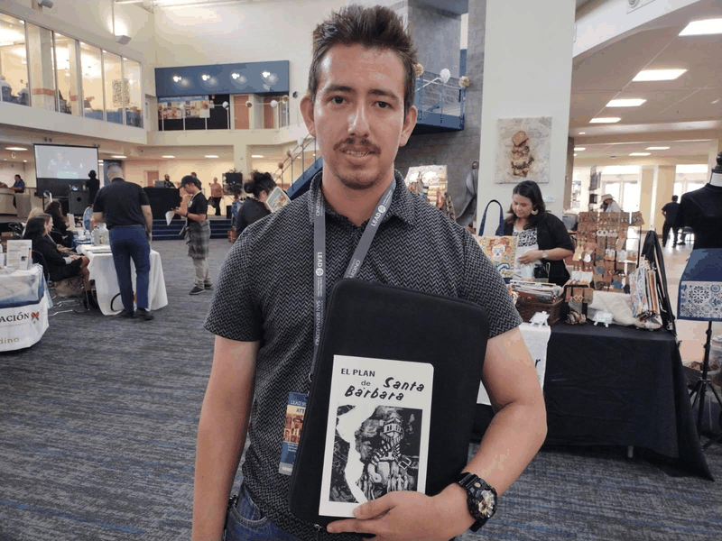

Home
Cyber
Comp Sci
Contact
Resume
Involvement
Involvement

The List
ASI
![Involvement: Verizon Breaking the Mold Webinar; Folding at Home Distributing Computing Workshop; IBM AI + Sports; AI Steering committee launch and open forum; Coyote Cares Day; E-Waste Workshop; Agentic AI IEEE; HACU's Career Readiness Program; Ride Splits Launch; Presented Linkedin Success Lab; Inland Empire (IE) Cybersecurity Summit; National public land day 2025 volunteer; Stats With Applications Focus group for real world datasets; Computer Science and Engineering (CSE) Club Outreach Officer; CSUSB HACU preconference panel speaker; CSE Club Opener; Inspire Symposium; CSUSB LEAD Summit; CSUSB Soccer Intramurals Tournament; Somos CSUSB la Pinata; Social Justice of Palestine Vigil; Deloitte Leadership Lounge; HSI Voices in STEM; IEEE Agentics Systems; Ridesplits | Youth Action Project | EDISON focus group; SANS Cloud Summit; HACU Emerging Leaders Summit; Iyac Trivia Contest; Iyac Innovation Challenge; HSI Symposium; CalSwift; Emerging Technology Innovation and Partnership Fellowship; Senior Science Buddy @ Science Success Center; SACNAS; College Of Natural Sciences Carnival; Meeting of the Minds; CSU Grand Slam; Cyber Solutions Summit; HSI virtual career fair; MAPSS Pre-Conference; HACU reunion; CSUSB 4th Annual Latinas Rising Conference; CSUSB safety walk; CSU Virtual Town Hall; HACU Conference; Electronic Warfare tech talk; 7th Annual ShEconomy; ITS Tech Talks; Github Copilot Lessons; Career Center redesign Committee; College of Natural Sciences Flag Ceremony; Science Success Center Open House; Leadership Plunge; Cookout with the candidates; HSF Connect; JP Morgan Tech Talk; SANS Ransomware Summit; Social Justice Summit; Student Vendor Market; Linkedin CSE workshop; AI Futures Workshop](../images/involvementFlash.gif)